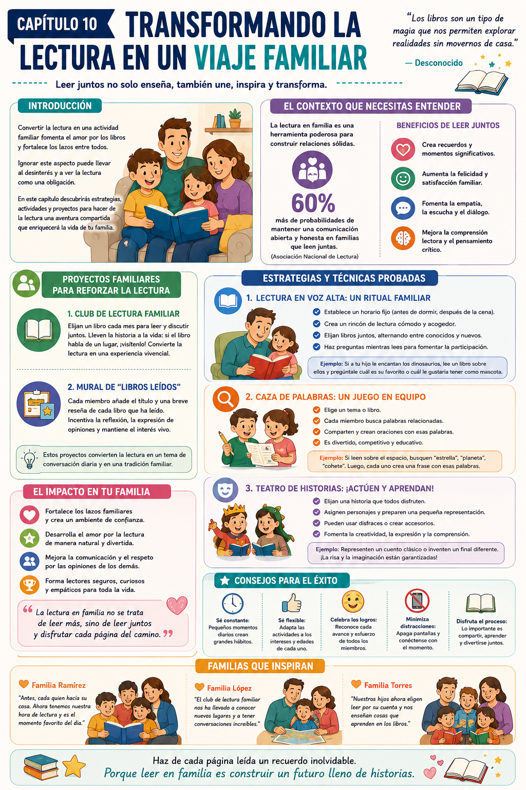

Imaginá una tarde de sábado: todos en el sofá, un libro en las manos, risas en el aire mientras cada uno comparte su parte favorita de la historia. Ahora pensá en el contraste: chicos que ven la lectura como una tarea aburrida y papás que prefieren que hagan cualquier otra cosa.
La diferencia entre esas dos escenas no es suerte — es una decisión. Transformar la lectura en un viaje familiar es posible, y este capítulo te muestra exactamente cómo.
Lectura en voz alta familiar
Un ritual que mejora la comprensión lectora y crea un espacio de conexión emocional donde el chico se siente seguro.
Caza de palabras en equipo
Un juego donde todos participan activamente — refuerza el aprendizaje de forma dinámica y divertida.
Proyectos familiares
Investigar un tema juntos, crear un mural, armar un libro — actividades que convierten la lectura en experiencia vivencial.
Lo que dice la investigación
Las familias que leen juntas tienen un 60% más de probabilidades de mantener una comunicación abierta y honesta. La lectura compartida no es solo una actividad educativa — es una herramienta para construir la relación con tu hijo.
✅ Antes de arrancar este capítulo

Tuki te dice:
Leer juntos no se trata de leer más, sino de leer juntos y disfrutar cada página del camino. Porque leer en familia es construir un futuro lleno de historias.
Para entender por qué la lectura familiar tiene tanto impacto, hay que ver qué pasa cuando la lectura deja de ser una tarea individual y se convierte en una experiencia compartida.
Beneficios emocionales de leer juntos
Más que vocabulario — es conexión
La lectura compartida va más allá de leer en voz alta. Es crear un ritual donde todos los miembros de la familia se sienten parte del proceso — donde se generan risas, preguntas, debates y recuerdos.
Las familias que leen juntas reportan niveles más altos de felicidad y satisfacción familiar. Esos momentos se convierten en recuerdos compartidos que fortalecen el vínculo mucho más allá del libro.
La lectura como refugio
En momentos difíciles — mudanzas, cambios, conflictos — la rutina de lectura familiar puede ser un punto de estabilidad y conexión. Un espacio seguro donde todos están juntos, sin presiones.
Proyectos familiares que amplifican la lectura
Más allá del libro — experiencias vivenciales
Los proyectos familiares relacionados con la lectura convierten el aprendizaje en una aventura colectiva. No se trata solo de leer — se trata de llevar la historia a la vida.
- 📚Club de lectura familiar: eligen un libro por mes y lo discuten juntos. Si el libro habla de un lugar, planifican una excursión relacionada.
- 🖼️Mural de libros leídos: cada miembro agrega el título y una reseña breve de cada libro que leyó. Se convierte en una conversación diaria.
- 🔬Proyectos de investigación: eligen un tema del libro y lo investigan juntos — con otros libros, videos, documentales — y crean algo: un mural, un librito, una presentación.
Ejemplo concreto
Leen un libro sobre Egipto. Cada uno investiga algo diferente: uno las pirámides, otro los faraones, otro la comida. Al final, crean un libro casero sobre Egipto con todo lo que aprendieron. Es un objeto único que van a atesorar.
Los hermanos como aliados lectores
La dinámica entre hermanos a favor de la lectura
Si hay hermanos en la familia, son un recurso enorme que muchos padres no aprovechan. Un hermano mayor que lee con el menor no solo ayuda al pequeño — también refuerza su propio aprendizaje al enseñar.
- 1Creá momentos de "lectura entre hermanos" — 10 minutos antes de dormir donde el mayor le lee al menor.
- 2Hacé que el hermano mayor elija el libro — eso le da protagonismo y responsabilidad.
- 3Celebrá ese momento como algo especial — que el menor lo espere con ganas.
Tuki te dice:
La lectura familiar no se trata de leer más, sino de leer juntos. Cada página compartida es un recuerdo que dura para siempre.
Tres estrategias concretas para convertir la lectura en una actividad familiar real — lectura en voz alta, caza de palabras en equipo y proyectos de investigación compartidos.
Lectura en voz alta — el ritual familiar
Horario fijo · Conexión emocional · Participación activa
La lectura en voz alta mejora la comprensión lectora y crea un ambiente de conexión emocional. Al leer juntos, tu hijo se siente seguro para hacer preguntas y expresar opiniones — eso fortalece su confianza.
- 1Elegí un horario fijo — antes de dormir o después de la cena. La constancia es la clave.
- 2Creá un rincón de lectura: cojines, manta, buena luz. Que el lugar invite a quedarse.
- 3Involucralo en la elección de los libros — alternás entre sus favoritos y otros nuevos.
- 4Hacé preguntas mientras lees: "¿qué pensás que va a pasar?", "¿qué harías vos en su lugar?"
Ejemplo concreto
Le encantan los dinosaurios. Elegís un libro sobre dinosaurios y mientras leés, preguntás: "¿cuál creés que es el más fuerte?" o "¿cuál te gustaría tener de mascota?" La lectura se convierte en conversación familiar.
Caza de palabras en equipo
Toda la familia busca · Competencia amistosa
Este juego transforma la lectura en una búsqueda activa donde todos participan. Cada uno tiene un rol — y eso hace que la lectura sea dinámica y divertida para toda la familia.
- 1Elegí un lugar base: la heladera, una pizarra, un cuaderno especial — donde se van pegando las palabras encontradas.
- 2Hacé una lista de palabras nuevas que el chico esté aprendiendo.
- 3Compiten por puntos: el que encuentra una palabra en un libro, cartel o la tele, la dice en voz alta y la usa en una oración.
- 4Cuando se completa la lista, hay una pequeña celebración familiar — merienda, noche de cine, lo que elijan.
Ejemplo concreto
El chico está aprendiendo "perro". Cuando alguien lo encuentra en un libro o en la calle, lo grita, cuenta una anécdota sobre un perro y gana el punto. La lectura queda entretejida con los recuerdos familiares.
Proyectos de lectura en familia
Un objetivo común · Investigación + creación
Los proyectos permiten que todos trabajen hacia un objetivo común. Se crean memorias y experiencias compartidas que fomentan la lectura de forma profunda y significativa.
- 1Elegí un tema que le interese a toda la familia — un animal, un país, una época histórica.
- 2Investiguen juntos: libros, videos, documentales. Cada uno anota lo que aprende.
- 3Creá un producto final: mural, libro de recortes, presentación — donde cada uno contribuye con algo.
- 4Organizá una "presentación familiar" donde cada uno explica su parte. Podés invitar a abuelos o amigos.
Ejemplo concreto
Eligen Egipto. Uno dibuja una pirámide, otro escribe sobre un faraón, otro investiga la comida. Al final, crean un libro casero sobre Egipto. Es un objeto único que pueden atesorar — y que refuerza la comprensión lectora de todos.
Tuki te dice:
Sé constante, sé flexible y celebrá el proceso. Lo importante es compartir — aunque la lectura sea imperfecta, el momento juntos vale todo.
Dos ejercicios para arrancar esta semana más las dos recetas del capítulo. El cierre perfecto para todo el viaje que recorrieron juntos.
📚 Noche de Cuentos en Familia
¿Para qué sirve? Crear una experiencia de lectura compartida que refuerza habilidades lectoras y fortalece la comunicación familiar.
- 1Elegí una noche fija de la semana y avisale a todos con anticipación — que lo marquen como un evento especial.
- 2Armá un espacio cómodo: almohadas, mantas, luz suave. Que invite a quedarse.
- 3Cada miembro elige un libro para compartir — pueden ser cuentos cortos, novelas gráficas, lo que cada uno prefiera.
- 4Cada uno tiene 10 minutos para leer en voz alta o contar de qué trata su libro — haciendo énfasis en lo que más le gusta.
Resultado: Una experiencia de lectura compartida que refuerza habilidades lectoras y fomenta la comunicación y el intercambio de ideas en familia.
📖 Proyecto de Lectura en Familia
¿Para qué sirve? Fomentar el hábito lector en el hogar y cultivar un ambiente de debate y creatividad familiar.
- 1Elegí un libro que sea adecuado para todos — puede ser una novela accesible o un libro de no ficción sobre un tema que le interese a la familia.
- 2Establecé un calendario: cuántos capítulos por semana, cuándo se reúnen para discutir.
- 3Después de cada sesión de lectura, durante la cena, cada uno comparte su opinión sobre los capítulos — animá a los chicos a hacer preguntas y expresar sentimientos.
- 4Al terminar el libro, organizá una pequeña ceremonia: discuten qué aprendieron y crean un mural con impresiones y dibujos sobre la historia.
Resultado: Un hábito lector instalado en el hogar, un ambiente de debate y creatividad familiar, y lazos más fuertes entre todos.
🌇 Tarde de Cuentos en Familia
¿Para qué sirve? Crear un momento especial y regular para disfrutar de la lectura en grupo.
- 1Organizá una tarde específica y comunícalo con anticipación — que todos lo agenden.
- 2Preparà el espacio con la manta y los snacks — que sea acogedor y festivo.
- 3Cada miembro elige un libro para leer en voz alta, alternando entre todos.
- 4Después de cada lectura, unos minutos para discutir qué aprendieron o qué les gustó.
Resultado: Mejora en la comprensión lectora y fortalecimiento de los lazos familiares.
📚 Biblioteca Familiar
¿Para qué sirve? Crear un espacio físico dedicado a la lectura que invite a explorar y elegir.
- 1Asigná un área de la casa como "la biblioteca familiar" — que sea accesible para todos.
- 2Reuní libros de interés general y diferentes niveles — involucrá a los chicos en la selección.
- 3Clasificá los libros por tema o nivel usando etiquetas o tarjetas de colores.
- 4Establecé un día por semana donde cada uno elige un libro de la biblioteca para leer y compartir.
Resultado: Un espacio que fomenta el amor por la lectura y la exploración autónoma de libros.
- 1No involucrar a todos: si solo uno o dos participan, se pierde el propósito. Asegurate de que cada miembro tenga un rol activo — aunque sea pequeño.
- 2Elegir libros inapropiados: evitá lecturas que no interesen a los chicos o que sean demasiado difíciles. Buscá títulos atractivos y accesibles para todos los niveles.
- 3Metas poco realistas: no esperes que lean un libro completo en una noche. Objetivos pequeños y alcanzables mantienen la motivación viva.
- 4Olvidar la diversidad de formatos: la lectura no solo son libros. Revistas, cómics, audiolibros — la variedad enriquece la experiencia y alcanza a más miembros de la familia.
- 5Convertirlo en obligación: si la lectura familiar se siente como tarea, perdés el interés de todos. Que sea divertido, ligero y asociado a momentos de alegría.
Tuki te dice:
¡Terminaste los 10 capítulos! 🎉 Ahora tenés todas las herramientas para transformar la lectura en un viaje familiar. No te olvidés de explorar los 3 bonos — ¡hay mucho más por descubrir!
Esta infografía resume las estrategias del capítulo final. Guardala como inspiración para cuando necesités ideas para leer en familia.

Infografía · Capítulo 10 — Transformando la Lectura en un Viaje Familiar
Tuki te dice:
¡Felicitaciones! Terminaste la guía completa. Ahora explorá los bonos — "Juegos que Enseñan", "Lectura y Emoción" y "Lectura sin Fronteras" — para seguir profundizando el viaje lector.